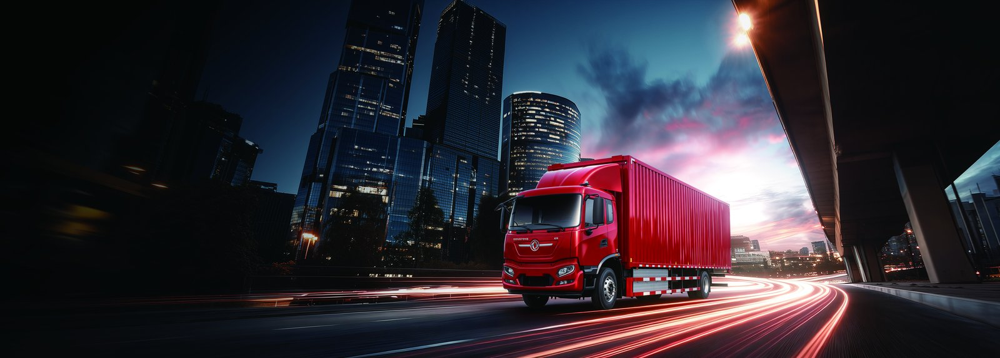

The TE8L electric tractor is an EV truck built for the regional logistics corridors of Uzbekistan, including the supply run to the mining and industrial hub of Navoiy. With a 400 kWh CATL LFP battery, a 360 kW motor and a gross combination weight of 49 tonnes, the TE8L covers about 300 km per charge while hauling loaded trailers between Tashkent, Samarkand and Navoiy at a fraction of diesel cost.
Navoiy region is a center for mining, metallurgy and industrial production, and it pulls steady volumes of supplies, equipment and ore along the central Uzbek corridor. The TE8L's about 300 km range covers the Tashkent to Samarkand leg and most of the Samarkand to Navoiy leg on a single charge, with a top up at a Tashkent or Samarkand charging stop on the return. Diesel tractors on this corridor burn fuel through mountain grades and summer heat, while the electric tractor regenerates energy on the descends and runs cool.
The 49 t GCW rating matches the standard regional trailer combination, so operators do not downsize loads to go electric. For Uzbek logistics companies serving the government's industrial zones, an electric tractor also supports the country's growing green transport agenda and improves tender standing with international miners.
The TE8L carries a 400 kWh CATL LFP pack and a 360 kW motor, giving strong cruising and grade performance with the thermal stability LFP offers in Central Asian summers. The battery is covered by an 8 year or 4,500 cycle warranty, protecting the asset through its financing term.
| Specification | TE8L Electric Tractor |
|---|---|
| Battery | CATL LFP 400 kWh |
| Motor power | 360 kW |
| Range | About 300 km per charge |
| GCW | 49 tonnes |
| Battery warranty | 8 years / 4,500 cycles |
| DC fast charge | 20 percent to 80 percent in 45 to 90 minutes |
| FOB price range | USD 95,000 to 115,000 |
Uzbekistan's growing DC charging network lets the TE8L run the corridor with a planned stop. A 200 kW to 360 kW charger in Tashkent or Samarkand restores 20 percent to 80 percent in 45 to 90 minutes during the driver's required rest, and the about 300 km range means Navoiy bound trips need at most one top up. At electricity priced around USD 0.05 to 0.18 per kWh, a full charge costs roughly USD 20 to 72, against USD 75 to 130 of diesel for an equivalent tractor shift.
For fleets near the Uzbekistan electric truck market hubs in Tashkent and Samarkand, battery swap is an option where a swap station is available, replacing a charge stop with a 5 to 6 minute swap that keeps the schedule tight.
Uzbek logistics often weighs road haul against rail for bulk and industrial cargo. The TE8L's advantage is door to door flexibility that rail cannot match, and its low energy cost closes the gap with rail on shorter regional lanes. Against diesel road haul the comparison is decisive on operating cost.
| Cost factor | Diesel tractor | TE8L electric |
|---|---|---|
| Energy per shift | USD 75 to 130 diesel | USD 20 to 72 electricity |
| Scheduled maintenance | High, engine and exhaust | Low, no engine oil |
| Door to door | Yes | Yes, cleaner |
| 5 year energy saving | Baseline | USD 55,000 to 105,000 |
A Navoiy bound fleet of three to five TE8L tractors typically recovers the purchase premium within two to three years on energy and maintenance savings, while gaining flexibility that rail cannot provide.
Uzbekistan swings from hot summers to cold winters, and LFP chemistry with the 8 year warranty handles both without the range anxiety of older battery types. The TE8L's regenerative braking also recovers energy on the descending grades toward Navoiy, extending effective range and reducing brake wear, a meaningful advantage on a corridor with repeated mountain passes. Shaanxi Fenghan Trading Co., Ltd, the authorized Dongfeng EV exporter in Xi'an, supplies Central Asia specification trucks and supports Uzbek buyers with spare parts, charger specification and operator training tailored to regional conditions.
Begin with two TE8L units on the highest frequency corridor, track kWh per kilometre against diesel cost, then scale to cover the full Tashkent to Navoiy lane. Driver training on regenerative braking and charge timing pushes battery life toward the full 4,500 cycles, and a Tashkent depot charger anchors the rotation.
Shaanxi Fenghan Trading Co., Ltd, the authorized Dongfeng EV exporter based in Xi'an, China, supports every TE8L export with a documented spare parts list, recommended consumables and a regional service plan so fleet uptime stays high on the corridor. Key wear items such as brakes, tires, lights and the high voltage connectors are specified for local procurement where possible, while battery and motor specific components are shipped from stock with clear lead times. Operator and mechanic training covers safe high voltage isolation, charge management and the seasonal checks needed for Uzbekistan's hot summers and cold winters.
Remote diagnostics and a shared parts manual let local workshops resolve most issues without a factory visit, and the 8 year or 4,500 cycle battery warranty gives finance teams a predictable cost baseline. For Navoiy bound logistics operators running the TE8L on regional lanes, this support structure keeps the tractor earning through peak season instead of sitting idle waiting on parts.
Most overseas buyers purchase on FOB terms and arrange their own rail or ro-ro shipping, so the practical planning unit is the total landed cost rather than the sticker price alone. Typical lead time from confirmed order to Chinese port is 30 to 60 days depending on battery configuration and charger option, and a phased rollout of two to four units lets a fleet validate kWh per kilometre before committing to a full corridor conversion. Shaanxi Fenghan Trading can quote a package that includes the truck, a Tashkent depot charger specification and the spare parts kit so the buyer receives a ready to operate solution.
For operators comparing the TE8L against continued diesel use, the deciding metric is lifetime cost per tonne kilometre, and the electric tractor's lower energy and maintenance line items compound across a multi year contract. Requesting a written quote with battery size, motor rating and delivery terms is the first concrete step toward electrifying a Navoiy logistics fleet with confidence and a clear payback model.
Uzbekistan's growing green transport agenda and industrial zone development are pushing logistics companies to cut emissions on regional corridors, and an early moving operator can win tender points with international miners and industrial tenants. The TE8L's 400 kWh CATL LFP pack and 8 year warranty remove the two biggest fears about electric trucks, range and battery life, leaving only the step of installing a Tashkent or Samarkand depot charger.
Taken together, the case for the TE8L in Uzbekistan is about sequencing: order early, train crews, build the charging routine, and scale as the savings and tender benefits compound. Shaanxi Fenghan Trading stands ready to support Uzbek buyers from first quote through the first year of operation and beyond as the fleet grows.
Buyers exploring the Uzbekistan electric truck market should request a written FOB quote including battery size, motor rating and charger option. The TE8L electric tractor is exported from China with documentation for Uzbek import and road registration. Contact Shaanxi Fenghan Trading for lead times, rail or ro-ro shipping and a total landed cost estimate for your Navoiy logistics operation.
Ready to electrify your fleet? Contact Shaanxi Fenghan Trading — authorized Dongfeng EV truck exporter. WhatsApp: +86 153 1943 1311 | Email: sales@fenghan-trade.com | dongfengevtrucks.com
🌐 Our Network: Fenghan Trade (SAGMOTO/SHACMAN Truck Export) · 4x2 6x4 tractor truck prime mover